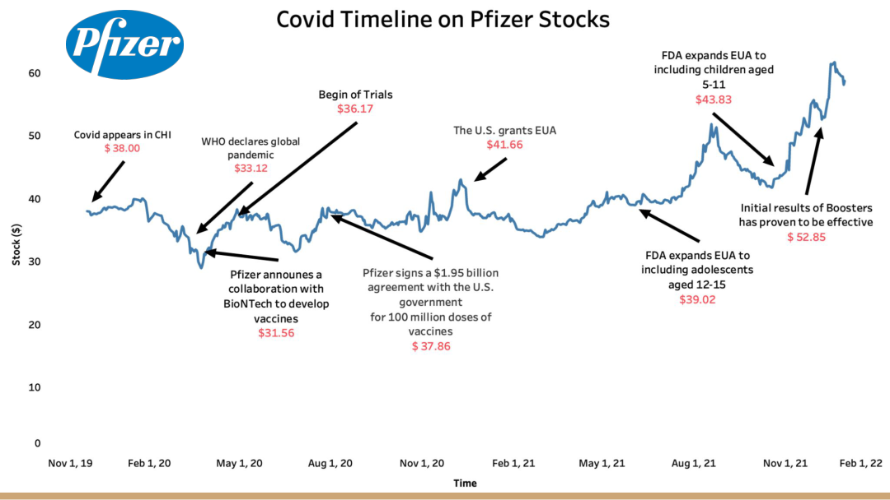
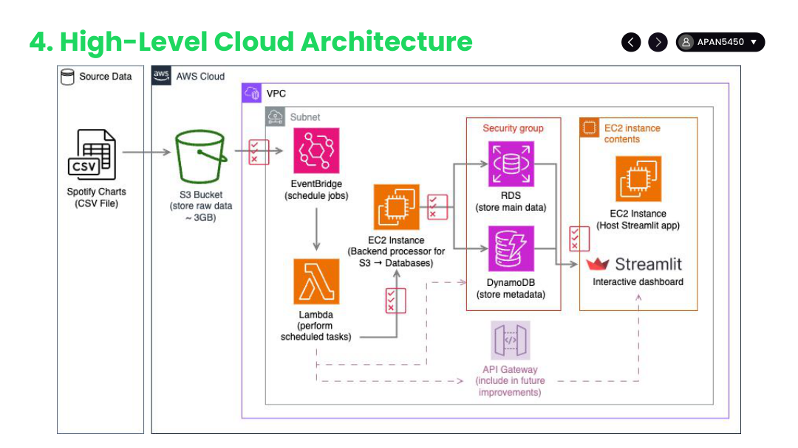
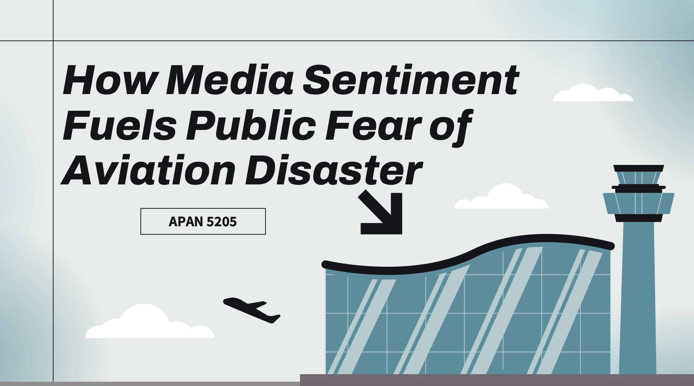
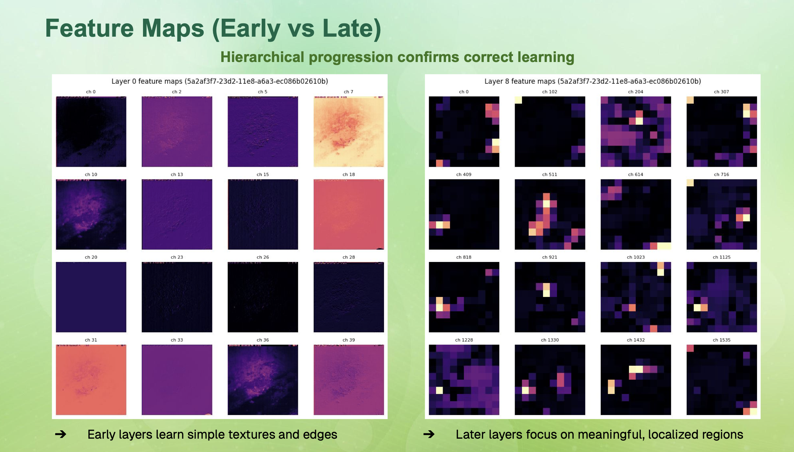
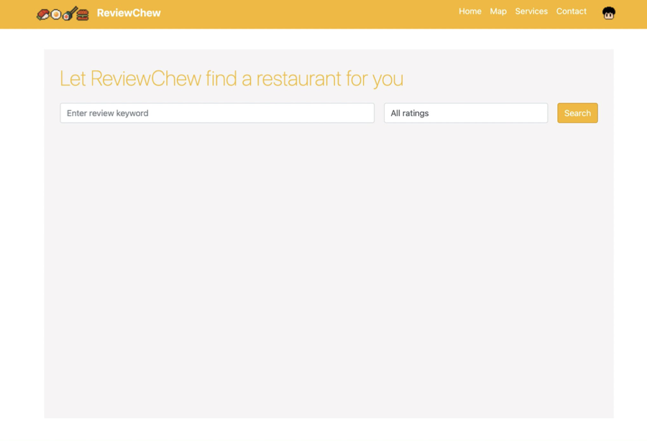
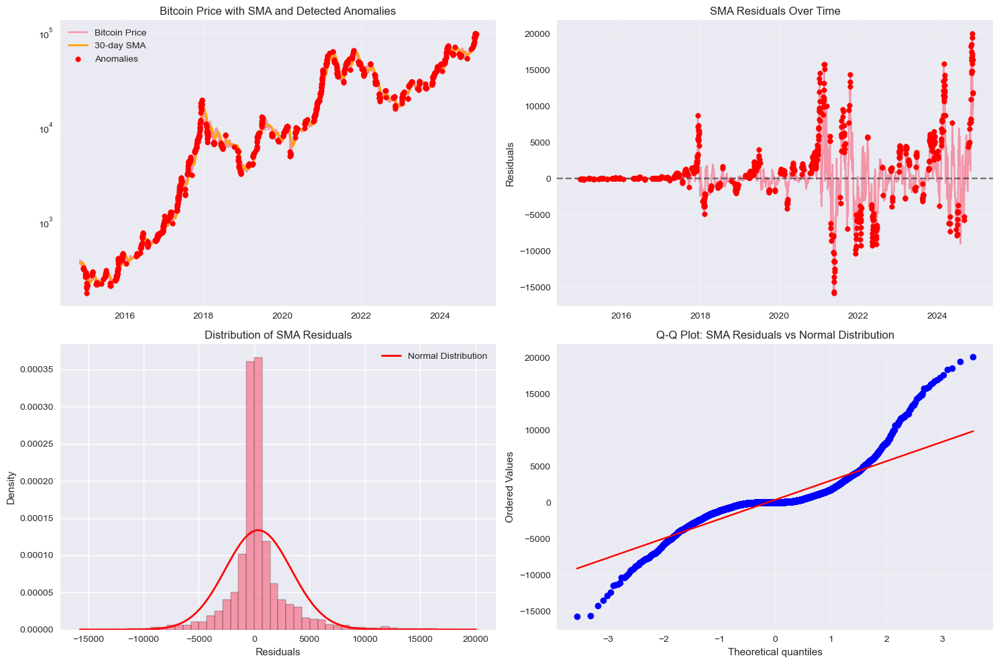
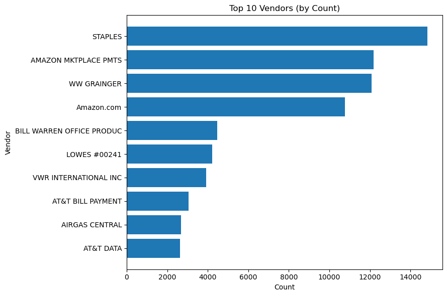
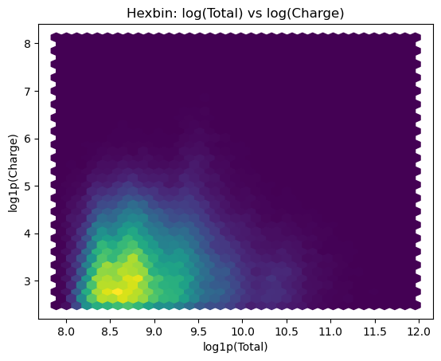

My Work
Projects
Data Analytics & Visualization
End-to-end analytical projects translating raw data into decisions through dashboards, storytelling, and statistical modeling.

Data Analytics & Visualization
Volatility of Pfizer Stock (2020-2021)
Analyzed how COVID-19 milestones (vaccine approvals, adverse reactions, Twitter sentiment, and US death rates) drove Pfizer's stock volatility. Built an interactive Tableau data story for a non-technical audience, revealing a 0.703 correlation between positive public sentiment and stock price gains.

Cloud Data Engineering
Spotify Chart Trends Dashboard
Built a cloud-based ETL pipeline and interactive analytics dashboard to explore Spotify chart data across 5 global regions (2017-2021). Raw data ingested from S3 and processed on EC2 into a hybrid database architecture: song metadata in DynamoDB and streaming facts in RDS (PostgreSQL). Exposed via AWS Lambda + API Gateway and visualized in Streamlit with Plotly charts.

NLP & Computational Social Science
How Media Sentiment Fuels Public Fear of Aviation Disasters
Investigated whether negative sentiment in aviation news headlines drives fear-related search behavior. Collected headlines from NewsAPI and the NYT API and crash records from the Aviation Safety Network (2020-2025). Key finding: media coverage volume can be 14x higher than actual crashes, and fear searches spike only when negative sentiment crosses a threshold.
Machine Learning & Computer Vision
Deep learning models and vision systems trained from scratch and deployed as production APIs.

Deep Learning & Computer Vision
Wildlife Species Classification Using Deep Learning
Trained EfficientNet-B3 with progressive fine-tuning on the Caltech Camera Traps Dataset (243K images, 140 locations) to classify 15 wildlife species from noisy, occluded camera trap imagery. Applied focal loss for class imbalance, active learning via uncertainty sampling, and Grad-CAM for interpretability. Achieved 62% accuracy and 0.63 weighted F-1 on held-out locations.

Computer Vision & Search
FoodVision: Image-Based Food Recognition API
Built a production-ready REST API that identifies food from photos, detects ingredients, and estimates calorie content. Uses OpenAI's CLIP model to generate image embeddings, matched against 249,000+ pre-computed ingredient vectors from the USDA FoodData Central database. Fully containerized with Docker and served via FastAPI.
Generative AI
Generative models, LLM fine-tuning, and AI-powered applications built from the ground up.

Applied Generative AI
Generative AI Model Suite: GAN, Diffusion, EBM & RL-Trained LLM
Designed and deployed 5 generative AI models as production-style REST APIs using FastAPI and Docker. Built a GAN to generate handwritten digits, trained DDPM diffusion and energy-based models for image synthesis on CIFAR-10, and applied reinforcement learning to post-train GPT-2 to follow a strict response format, mirroring RLHF techniques used to align large language models.

Database Engineering & Full-Stack
ReviewChew: AI-Powered Restaurant Review App
Deployed a full-stack web application that allows users to search for restaurants and receive AI-generated summaries of reviews. Integrated structured and unstructured data from the Yelp Open Dataset (6M+ reviews, 100K+ businesses). Used PostgreSQL for relational data, MongoDB for LLM-generated summaries, and Amazon S3 for images. Containerized all services with Docker.
Risk & Anomaly Analytics
Fraud detection, pricing anomalies, and behavioral signal engineering for audit and compliance use cases.

Time Series & Anomaly Detection
Bitcoin Price Anomaly Detection: SMA, EWMA & Prophet
Applied three anomaly detection methods to 10 years of Bitcoin daily prices (2014-2024). Compared a 30-day Simple Moving Average, Exponential Weighted Moving Average, and Meta's Prophet model with Bayesian forecasting. Validated methods through residual histograms, Q-Q plots, and STL decomposition, identifying 36 high-confidence anomalies agreed upon by all three methods.

Feature Engineering & Fraud Analytics
Purchase Card Fraud Detection: 6 Behavioral Features
Analyzed a public-sector purchase card (pcard) dataset to surface compliance risks through EDA and feature engineering. Explored spending by merchant category, vendor concentration, and off-hours timing, then built six cardholder-level behavioral features to power an unsupervised anomaly detection model.

Healthcare Analytics & Feature Engineering
Hospital Pricing Anomaly Detection: 15 Investigative Leads
Conducted an exhaustive EDA on Medicare inpatient charge data, structured as 15 business-hypothesis-driven leads. Built features including charge-to-Medicare ratios, within-DRG z-scores, Mahalanobis distance, pricing tilt, market concentration, and region-adjusted residuals to surface anomalous hospital billing behavior.